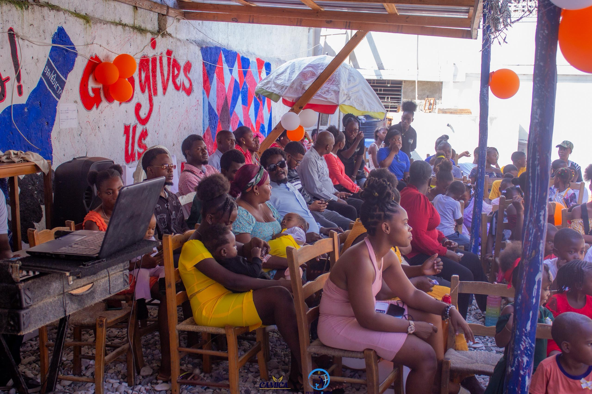
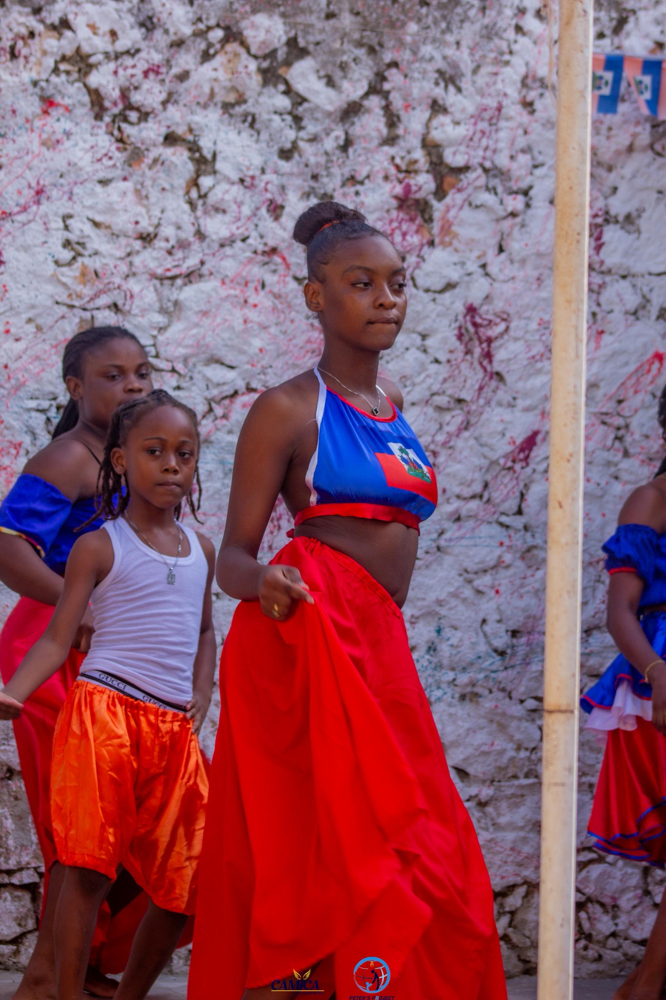
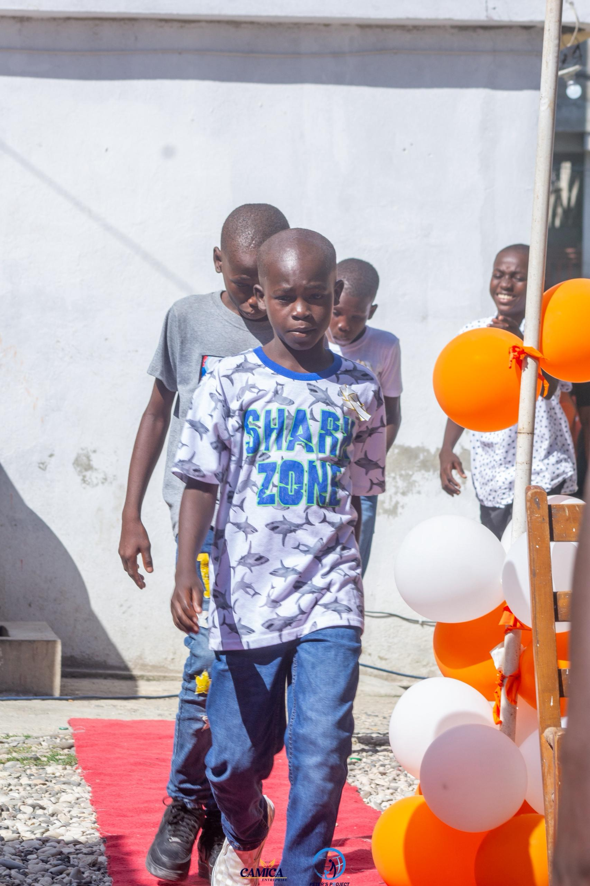
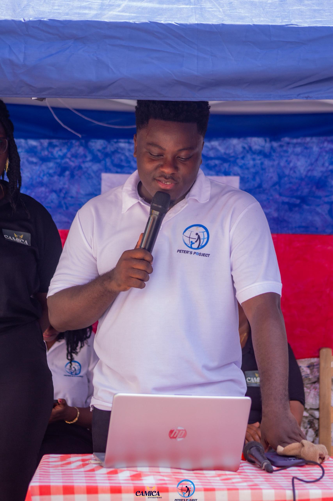

Peter's Project
Paran ki Fè Deplasman pou timoun yo
Edikasyon se youn nan pi gwo kado yon timoun kapab resevwa.
Sepandan
anpil fanmi fè fas ak difikilte ekonomik pou yo voye pitit yo lekòl.

Peter's Project
Edikasyon se youn nan pi gwo kado yon timoun kapab resevwa.
Sepandan
anpil fanmi fè fas ak difikilte ekonomik pou yo voye pitit yo lekòl.

Peter's Project
Pandan aktivite òganizasyon an te òganize pou ede timoun yo youn nan pi bèl bagay nou te obsève se te prezans ak patisipasyon timoun yo
li res la
Peter's Project
Aktivite sa a te yon moman espesyal ki te rasanble anpil timoun
nan yon atmosfè ki te chaje ak lajwa,
aprantisaj ak pataj.

Peter's Project
Pandan aktivite a, plizyè diskou enpòtan te fèt pou ankouraje timoun yo,
remèsye paran yo epi mete an valè travay òganizasyon an.

Peter's Project
Aktivite sa a te yon moman espesyal ki te rasanble anpil timoun nan yon atmosfè ki te chaje ak lajwa, aprantisaj ak pataj.
li res la.jpeg)
Peter's Project
Pandan aktivite a, plizyè diskou enpòtan te fèt pou ankouraje timoun yo, remèsye paran yo epi mete an valè travay òganizasyon an.
li res la